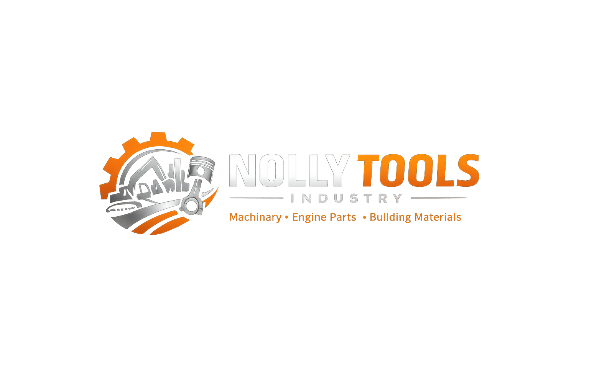
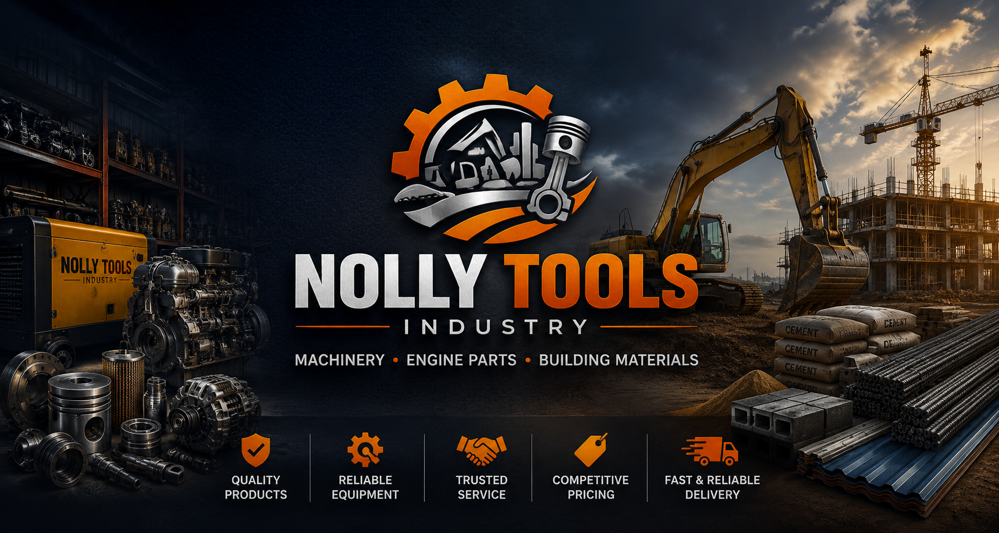

At Nolly Tools Industry, we are committed to supplying reliable products that power businesses, construction projects, workshops, and industries. From engine components and heavy-duty machinery parts to construction and building materials, we provide solutions designed to meet the highest standards of quality and durability.
With years of experience in the industry, we understand the importance of dependable equipment and materials. That is why we carefully source and supply products that help our customers complete their projects efficiently and successfully.
Whether you are a contractor, engineer, mechanic, builder, or business owner, we are dedicated to providing the products and support you need to get the job done right.
We supply reliable machinery, engine parts, industrial tools, and building materials sourced from trusted manufacturers to ensure durability and performance.
We offer quality products at fair and competitive prices, helping our customers get the best value for their investment.
With extensive knowledge of machinery, spare parts, and construction materials, we provide expert guidance to help customers make informed decisions.
We maintain a strong supply network to ensure products are available when customers need them, reducing delays and keeping projects on schedule.
Our customers are our priority. We are committed to providing excellent service, prompt support, and lasting business relationships.
Contractors, mechanics, engineers, businesses, and individual customers trust Nolly Tools Industry for dependable products and professional service.